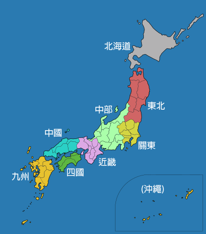

千島之國，從四大島區分
日本是由北海道、本州、四國、九州等4個大島和約有3900多個小島組成，西臨日本海與朝鮮半島相望、東邊濱臨太平洋，全日本共有47個一級行政區單位為都道府縣（1都1道2府43縣）
-
北海道
北海道位於日本的北部，是日本面積最大且唯一以「道」為名的一級行政區，整體位列日本二大島。
-
本州
本州島是日本列島中最大的島嶼，其上包含了習慣上被稱為東北、關東、中部、近畿與中國的五個地方，包括東京與大阪在內等日本最重要的都會區皆位於本州島上
-
四國
四國是四個島嶼中最小的一個，位於九州東部和本州東南部。
-
九州
又稱九州島，位於日本西南部，為本土四島之一，也是日本第三大島，